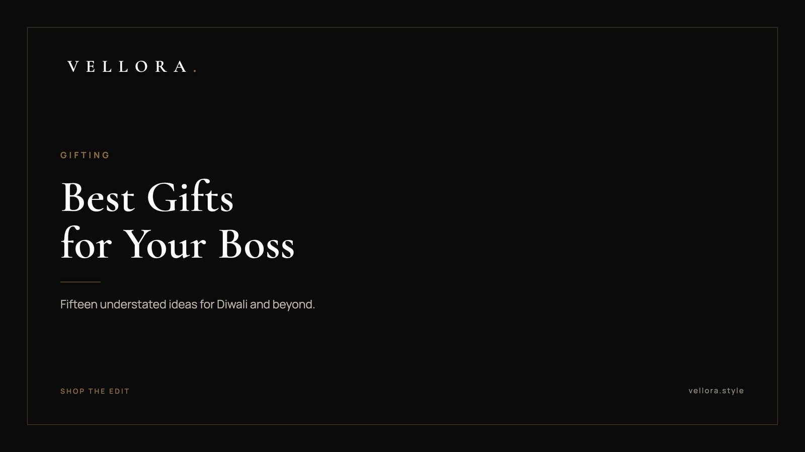

THE VELLORA EDIT
Best Gifts for Boss: 15 Premium Ideas for Diwali and Beyond
By Vansh Shah, Founder

- A gift to a manager works best from the whole team. A pooled gift feels like thanks, not a bid for favor.
- Choose something useful and quiet: a watch, a structured bag, a clean pair of sneakers, a small leather piece.
- Avoid anything too personal, such as perfume or clothing in a guessed size.
- Check your company's gift policy first. Some firms set limits on gifts between colleagues.
- Give it simply, with a card everyone has signed. The gesture matters more than the ceremony.
The best gifts for boss moments are quieter than most people expect. A well-made watch, a structured bag, or a small leather piece they will use every day. Nothing loud, nothing too personal. When we put together the best gifts for boss occasions, we start from respect: the gift should thank someone for their leadership without making either of you uncomfortable.
That is harder than it sounds. A gift to a manager carries more weight than a gift to a friend, because the relationship is not equal. So this list keeps the tone understated. Below are 15 of the best gifts for boss occasions such as Diwali, a promotion, a birthday or a farewell, with most ideas drawn from the Vellora edit so you can see the exact piece. We follow them with plain etiquette, and short notes on gifts for coworkers and new starters. If you remember one thing, make it this: the best gifts for boss and team alike are useful, discreet and given together.
How to choose a gift for your manager
Start with what they already use. A manager who checks a watch in every meeting will notice a good one. A manager who arrives with a laptop bag over one shoulder will use a better bag. Guessing at a new hobby rarely works.
Then think about who is giving. One person gives something small. A whole team can give something more substantial, because the cost and the gesture are shared. That simple split is why most of the larger pieces below are marked as team gifts in the table.
Finally, think about the occasion. Diwali calls for something warm and festive in spirit. A promotion or a farewell calls for something that marks a new chapter. A retirement is the one moment where a truly traditional gift, like a gold watch, feels right.
- Look at their wrist, their bag and their shoes before you shop.
- Prefer neutral colors: black, navy, tan, steel.
- Skip anything with a large logo. Quiet pieces suit most offices.
The best gifts for boss occasions follow from those three questions. Everything else is detail.
Watches and the best luxury accessories for men
For a male manager, a watch is the classic answer, and these are some of the best luxury accessories for men who wear them every day. Watches are also the easiest gifts to get wrong on size, so look at what they wear now. You can browse the full watch edit for more.
1. A solar chronograph for everyday wear
The Seiko Prospex Speedtimer Go Large Solar, SSC915P1 is a sporty chronograph that charges from light. Solar watches rarely need attention, which suits a busy manager who will not think about a battery.

2. A solar watch with a motorsport feel
The Seiko Prospex Circuit Race Solar, SSC941P1, suits a boss who follows racing or simply likes a sporty dial. It works well as a team gift for a birthday.
3. A GMT watch for a manager who travels
The GMT-Master II, reference 126710GRNR is a 40 mm watch in Oystersteel. A GMT complication tracks a second time zone with an extra 24-hour hand. This is a pooled gift for a significant milestone, such as a senior promotion or a long tenure.
4. A gold dress watch for a retirement
The 1908, reference 52508, is a 39 mm watch in 18 ct yellow gold with a polished finish. A formal gold watch is a traditional retirement gift, and this one is slim and calm. Reserve it for that kind of moment, given by the whole team.
5. Leather sneakers for a relaxed office
The LV Trainer Sneaker in blue is a smart low-top. In offices without a strict dress code, a good pair of sneakers gets worn more than any formal gift. Confirm the size quietly first.
6. The same sneaker in a darker tone
The LV Trainer Sneaker in Marine is the deeper navy version. It pairs with denim and chinos and hides wear well. Our page on the best luxury sneakers for men covers fit and care.
Bags for a manager who carries the day
For a manager of any gender who travels, commutes or carries a laptop, a good bag is used every working day. Our bag edit has the full range.
7. A structured tote for the office
The OnTheGo MM is a tote with room for a laptop, files and a day's essentials. It reads professional and holds up to daily use.
8. A structured bag for meetings
The Vendome PM is compact and holds its shape. It suits a manager who wants something polished for client meetings and dinners.
9. A bag with a distinctive shape
The Petit Palais is a small structured bag. It suits a manager with a clear personal style who would enjoy a piece that is a little different.
10. A classic top handle satchel
The Kate Spade Top Handle Satchel, in red or black, is a tidy, traditional shape. Black is the safer choice when you are unsure of their wardrobe.
11. A navy flap bag
The Dior Monogram Flap Bag comes in navy, a calm color that sits well with office wear. It is a considered pick for a manager who prefers deep tones over bright ones.
12. A camera bag for weekends
The Gucci GG Horsebit Camera Bag, in beige and brown, is a compact crossbody. It suits a manager who wants something relaxed for travel and days off.
Small, understated gifts
Sometimes a smaller gesture is the right one, especially from one person rather than a team. These are generic styles to look for.
13. A leather card holder
A slim card holder in plain leather is useful every day and never feels excessive. Choose black or brown with no visible logo.
14. A leather document folio
A simple folio for notes and papers suits a manager who still writes by hand in meetings. Look for clean stitching and a structured spine.
15. A good notebook and pen
A well-bound notebook with a quality pen is a quiet gift that suits almost anyone. Add a handwritten note and it becomes personal without being intimate.
The 15 ideas at a glance
| # | Idea | Best occasion | Give as |
|---|---|---|---|
| 1 | Seiko Speedtimer Solar | Diwali, birthday | Team |
| 2 | Seiko Circuit Race Solar | Birthday | Team |
| 3 | GMT-Master II | Senior promotion | Team |
| 4 | 1908 gold dress watch | Retirement | Team |
| 5 | LV Trainer, blue | Diwali, birthday | Team |
| 6 | LV Trainer, Marine | Farewell | Team |
| 7 | OnTheGo MM | Promotion | Team |
| 8 | Vendome PM | Diwali | Team |
| 9 | Petit Palais | Birthday | Team |
| 10 | Kate Spade Top Handle Satchel | Diwali | Team |
| 11 | Dior Monogram Flap Bag | Promotion | Team |
| 12 | Gucci GG Horsebit Camera Bag | Farewell | Team |
| 13 | Leather card holder | Diwali | Individual or team |
| 14 | Leather document folio | Work anniversary | Individual or team |
| 15 | Notebook and pen | Any occasion | Individual |
Workplace gift etiquette for a manager
Gifting upward is different from gifting a friend. A few plain rules keep it comfortable for everyone.
- Give as a team. A pooled gift from the whole team reads as thanks. A lavish gift from one person can look like a bid for favor, even when it is not.
- Check the policy. Some companies limit gifts between colleagues, especially between a manager and their reports. Read it before you buy.
- Keep it useful and neutral. Avoid perfume, clothing in a guessed size and anything with a personal message that would feel odd in an office.
- Mind the moment. Diwali, a birthday, a promotion, a work anniversary and a farewell are all natural times. Give it at a team lunch or in a quiet moment, not in front of other departments.
- Write a card. A few sincere lines signed by everyone often matter more to a manager than the gift itself.
When you shortlist Diwali gift ideas for boss and team, plan ahead. Dhanteras falls on Friday, 6 November and Diwali on Sunday, 8 November in 2026, so most offices exchange gifts in the week before. Collect the team's contributions early so no one feels rushed.
Best gifts for coworker birthdays and farewells
The best gifts for coworker occasions are smaller and lighter than a gift to a manager. Think of a leather card holder, a good notebook, or a pair of sneakers if a group is pooling for a close colleague's farewell. Keep the gesture equal across the team so no one is left comparing.
When you are choosing the best gifts for coworker farewells, think about where they are going next. Someone moving to a client-facing role will use a structured bag. Someone relocating may appreciate a GMT watch from a pooled fund.
Best gifts for a new job
The best gifts for a new job are practical things a person will carry on their first day. A structured tote such as the OnTheGo MM, a clean watch, or a slim card holder all fit. These pieces quietly say you believe in the next chapter.
If you are buying for a family member, a close friend or a partner, the best gifts for a new job can be more personal than anything you would give a boss. A watch from our edit for men is a traditional marker of a new role. We, the Vellora team, keep the selection small so the choice stays simple.